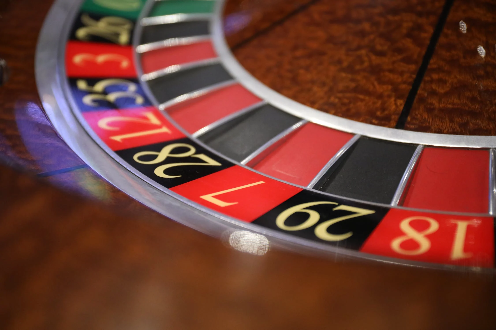

<template>
  <div class="MainContainer">
    <div class="TitleImg center">
      
    </div>
    <div class="single-wide">
      <h1>Where to Play Roulette on Fremont </h1>
      
      <p><b>Here are VDF's Top Picks for where to play Roulette on Fremont St </b>As always were looking for that single zero Roulette games.  Lets take a look at all Fremont St has to offer. </p>
      <p><b>Plaza </b>is your spot if your going to be playing a game of roulette, your best bet is to play at the Party Pit at The Plaza. The single zero roulette wheel is the only one on Fremont St. It lowers the casino advantage to 2.7%. </p>
      <p><b>The Golden Nugget </b>is home to more of them than any other Off-Strip casino, with eight wheels spinning at all hours of the day and night. Minimum bets for these double-zero wheels stand at $10 per spin, but you can up the ante to $200 per if you’re feeling lucky.</p>
      <h5>"My life experience has taught me nothing happens by chance. Even the idea of the ball in a roulette game: it's not chance it ends up in a certain place. It's forces that are at play." </h5>
      <h6> <i>Andrea Bocelli</i></h6>
    </div>
  </div>

</template>
